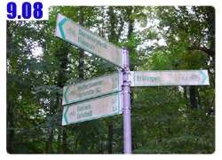
一直以為今天是星期天，想說沒有人會上班或是那麼早起，所以就安心的一覺睡到七點多。
在帳篷中安穩的睡了九個小時，感覺怎麼外頭街道開始熱鬧起來 ， 爬出帳棚一看手錶才發現今天才星期六而已。
估計抵達時間是十二日，算一算日期，順利的話下個星期三就到了，漫長的旅行終於要劃上句點了。
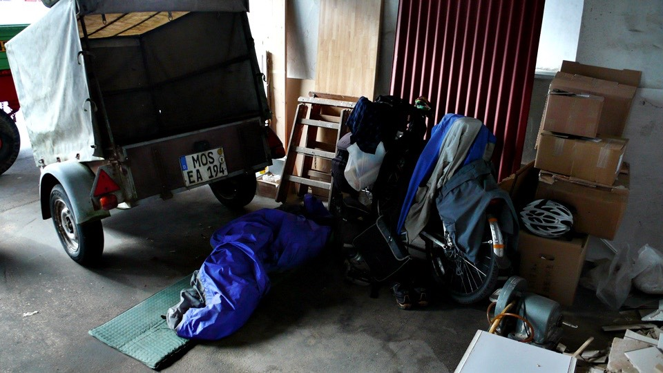
從開始想家之後就覺得時間過得有點慢，扣除今天不算的話，從抵達邊境開始，只要再騎三天半的車就能抵達巴黎。
倒數計時的感覺令人血脈賁張，收拾完東西準備進行德國最後一天的旅程。
今天的天氣很難說是好還是壞，至少一起床的時候沒有下雨，但是烏雲密布的天氣跟前幾天比起來則是大同小異。
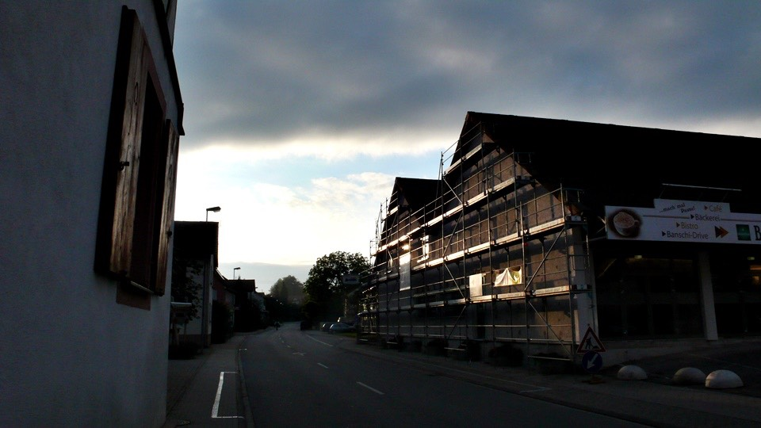
雖然說趕著出發騎完最後一天的路，可是昨天研究地圖之後發現自己離邊境已經不遠了，我一直以為自己還在德國中部打轉。
進入德國之後沒有一天不迷路，東繞西晃的也算是一點一點往西南方移動，只可惜多騎了很多冤枉路。
在出發之前又找了一個地方寫遊記，看起來像是還沒開張的活動中心大門。
遊記寫完之後就利用街頭賣轉蛋的機器上傳到網路上，我真是愛死歐洲網路超級發達這一點，網路覆蓋的程度可以說有房子的地方就有網路。
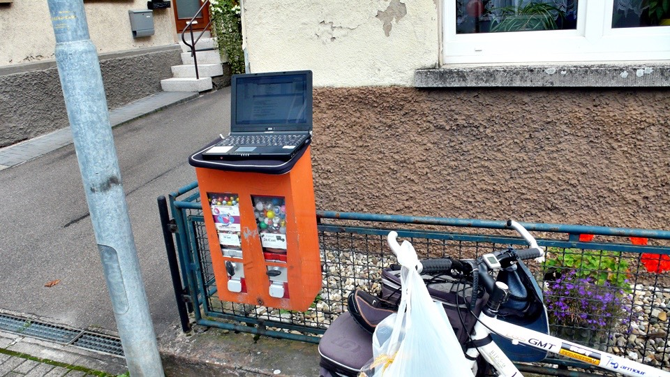
兩張照片，一小段文字，卻花掉了一整個早上的時間在做這些事情，出發的時候已經中午十二點。
心裡只想著反正邊境已經在眼前了，不急～不急～輕鬆騎就可以到。
距離是不遠沒錯，大概一百公里就可以抵達，但是路線可沒那麼簡單，扣除掉迷路、找路、繞路的時間，今天可是一點也不輕鬆。
只要一進入城市，就會陷入恐慌的狀態，就算跟著指示牌走，還是一樣迷路，我在這邊兜了一個大圈子，又回到原點。
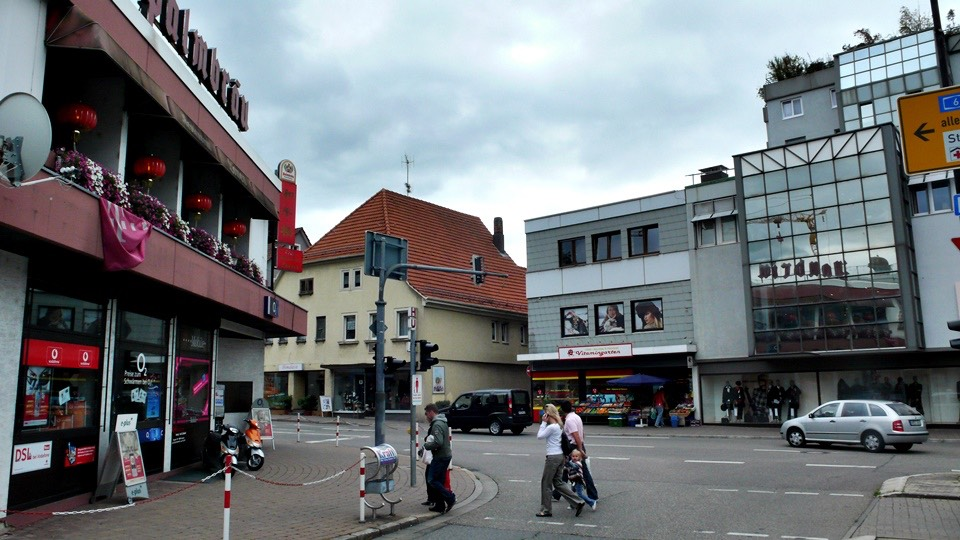
德國南部的人很熱情，好久沒有感受到騎車時會被路人加油的感覺。
因為像我這樣騎車旅行的人在歐洲到處都是，每天至少都會看見一打以上的單車旅行者，但是說來奇怪，大家都不會停下來聊天寒暄。
只剩下擦身而過的瞬間，點頭微笑的緣分而已，如果今天是在俄羅斯或是哈薩克相遇的話，那肯定是不一樣的故事。
Peter給的地圖很好用，但僅止於大條的馬路，而且很多道路都被規劃成汽車專用道，這一點從地圖上是看不出來的。
往往都要等騎到的時候才會開始唉聲嘆氣，然後翻開地圖研究怎麼繞過這一段，替代道路往往都是自行車專用道。
所幸標示很清楚，城市名稱、距離、方向，感覺跟一般馬路的指示牌一樣專業，但問題就在於自行車專用道很難辨識。
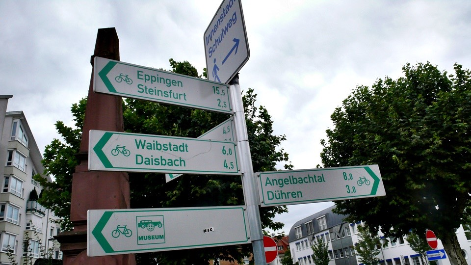
它不像一般的道路那樣明顯，而是綜合著田埂、鄉間小路、小橋、住宅區間的巷道。
更糟糕的是路標畫的是直線箭頭，實際騎起來都是曲折得跟迷宮一樣，而且自行車道彼此之間互相連結，更令人搞不清楚方向，
一堆的十字路口跟交叉路，最慘的就在於這些分岔的路口往往沒有指示牌說明方向。
所以每次只要轉離大馬路，開始用自行車道繞行的時候，心中的迷路警示燈就會開始閃爍，而且這個時候地圖完全派不上用場。
因為自行車專用道太小條，地圖上根本就沒有畫，唯一能夠從迷宮中脫困的只有向在路上騎車跟慢跑的人不停問路。
明天是星期天，商店都關門打烊，星期六的時候則會有市集，看起來很熱鬧，這時候差不多要收攤了，買東西會比較便宜唷。
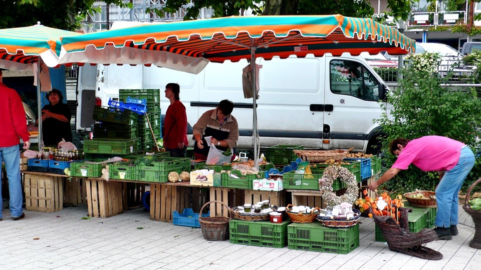
趕在營業日的最後一天，去超級市場進行採購，要買今天跟明天兩日份的食物，那就有兩天的預算可以花。
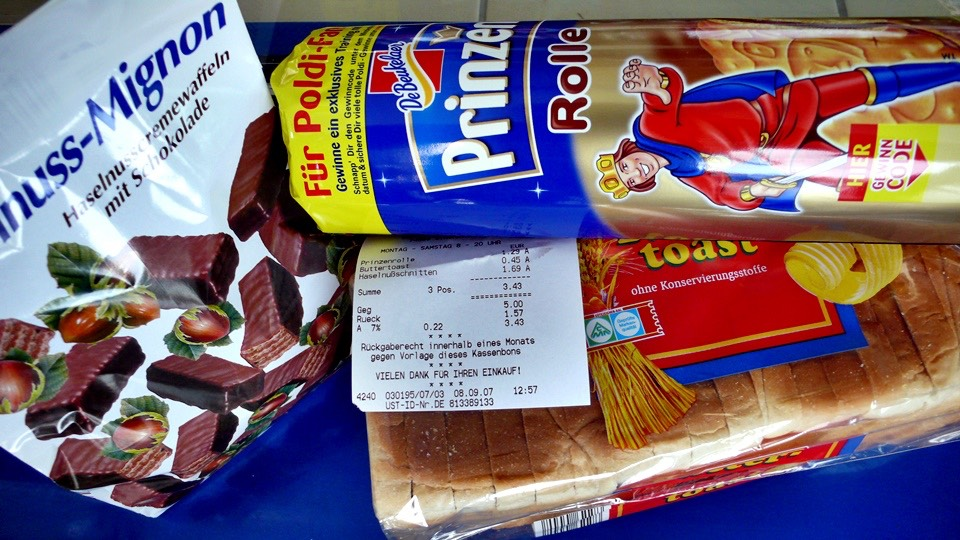
一口氣買了一條吐司、一包上次買過的王子巧克力餅乾跟一包巧克力夾心酥，賣場中的東西都是大份量的包裝，這些東西吃兩天應該沒問題。
迷路的時候經過一個飛機展示中心，展示的可不是骨董飛機，一架又一架都是最新式的客機，排了好多人等著進去參觀。
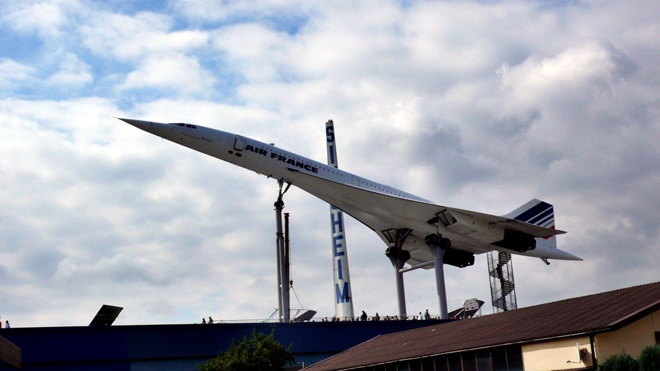
這個景色我一共看了兩次，因為之後發現迷路了，又重新走回來一趟。
本來以為已經離開這座城市，看來緣分還沒斷，走另外一條路碰碰運氣。
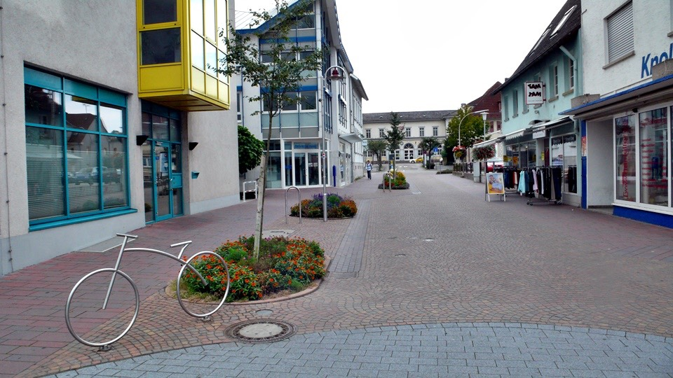
地圖中對於城市都用灰色的區塊來表示，其中的道路完全都沒標示，其實這樣也好，不然整本地圖密密麻麻的更難看懂。
最理想的情況是在城市的入口就發現『i』的告示牌，不然就只能靠運氣來脫離了。
剛才走大馬路出去，結果繞了一圈又回來，這次換走自行車專用道脫困，看到綠色的自行車牌子了嗎？
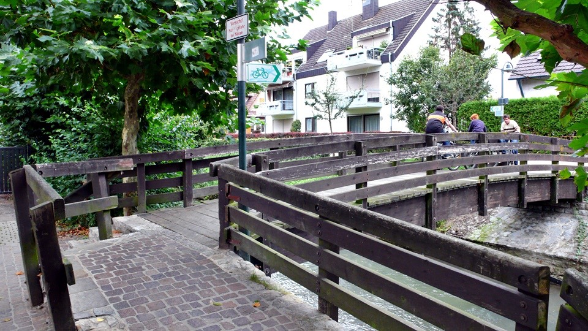
這種路也真的只有自行車跟人有辦法通行，橋上的小孩往下看的景色是這樣的。
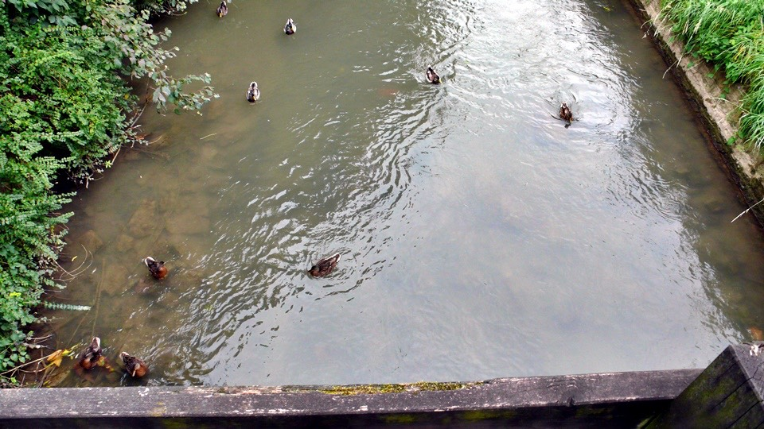
鴨子～又是鴨子，好心的分一片吐司給牠們吃，現在處於糧食消耗戰期間，請理解我不能分太多食物給你們。
如果你們願意犧牲一隻給我吃的話，那真是太令人感動了。
城市的入口處偶爾會看見黃色的機器，上面寫著『SIE FAHREN』，一開始不懂是什麼，只知道每次經過的時候都會顯示數字。
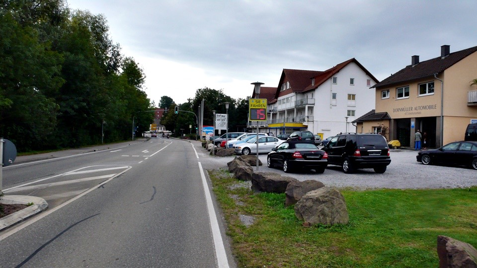
可是又不像溫度計，看久了才發現原來是測速器，讓進入城鎮的駕駛知道現在自己的速度有多快，有提醒駕駛放慢速度的功能。
目前我的速度則是十五，單位應該是公里而不是英哩，等發現它的真正用途之後就來回的騎了好幾次，很好奇它運作的原理是什麼？
路上隨手拍的，德國真是什麼東西都能小心，從小心飛機、小心下雪，連小心青蛙都出現了。
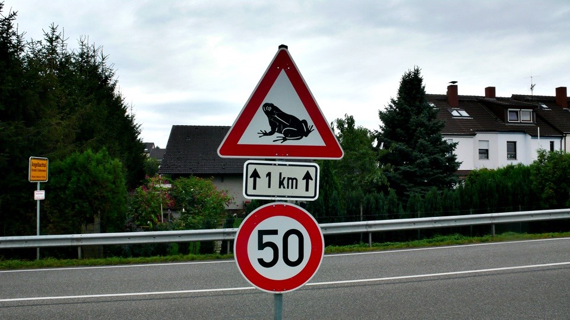
不明的農作物系列，上頭開著紫紅色的小花，沒有結任何果實，高度約一點五公尺，農夫開著收割機在採收當中。
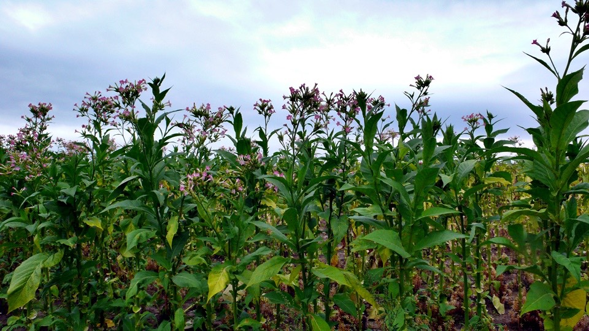
今天騎在自行車專用道上巡田很有成就感，不論什麼東西都是一整片的種，就連最不起眼的白蘿蔔也是種得滿滿一整個山頭。
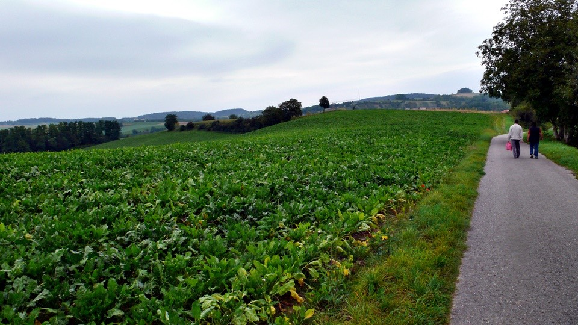
每一個長得都很大喔～昨天我還跟Peter說，每次看到這些白蘿蔔我都很有偷拔的衝動，但是拔了也不知道該怎麼煮來吃。
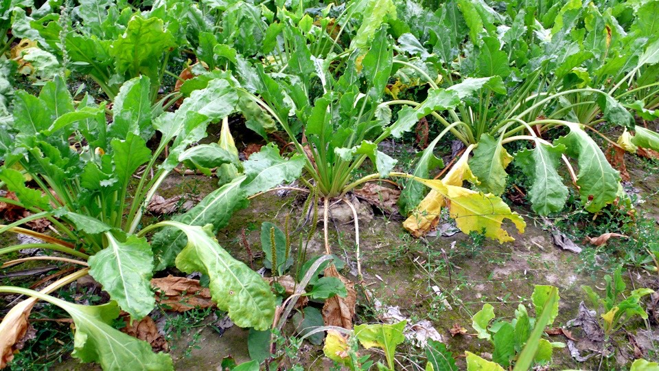
再度進入城鎮，在路上的時候遇到迎面而來的警察，騎著摩托車將所有的汽車趕到路邊停止，連我也被警察示意，叫我往路邊停靠。
摩托車之後是開道的警車，哇賽～整條路淨空，在台灣的話一定又是某個豬頭官員要通行了，在德國究竟為了什麼要如此大費周章呢？
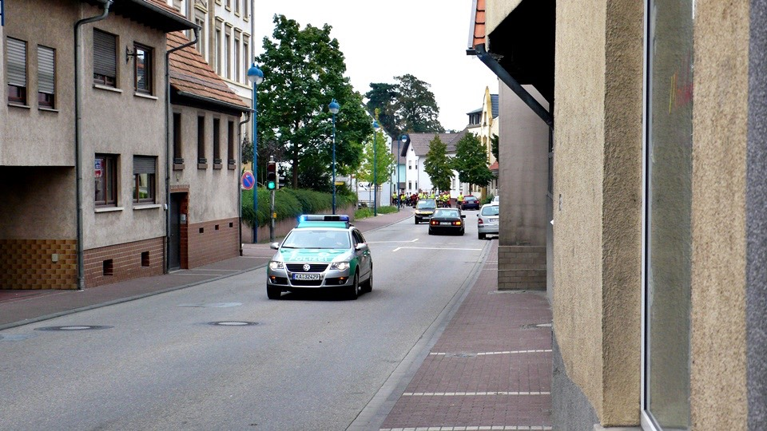
警車之後緊接著是一輛smart，後面這些...是滑直排輪的人群嗎？
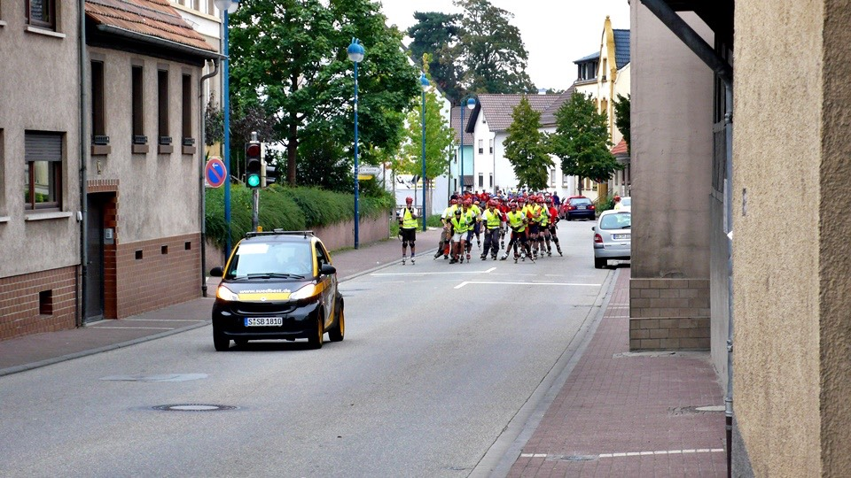
整個也太多了吧，粗略估計至少有三百人左右，形成一條長長的人龍滑行而過，看起來非常地壯觀。
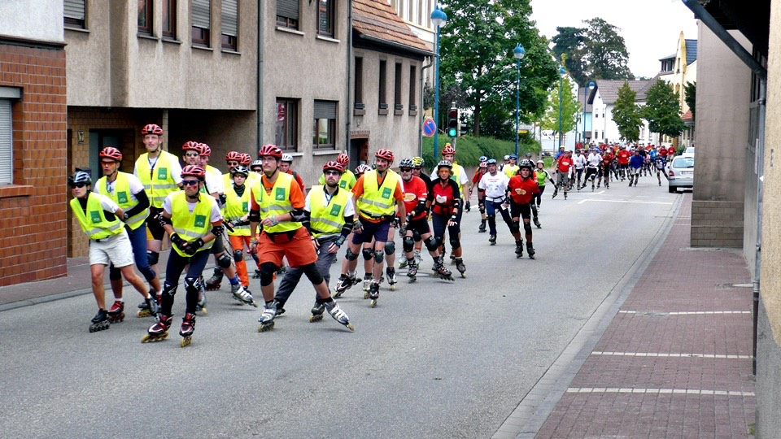
相機拿出來拍的時候，經過我的群眾就會揮手打招呼、比勝利手勢，看起來就很開心的樣子～
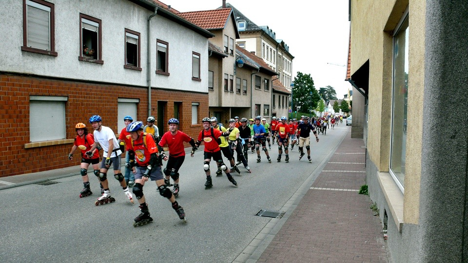
好多喔～究竟有多少人參加呀？
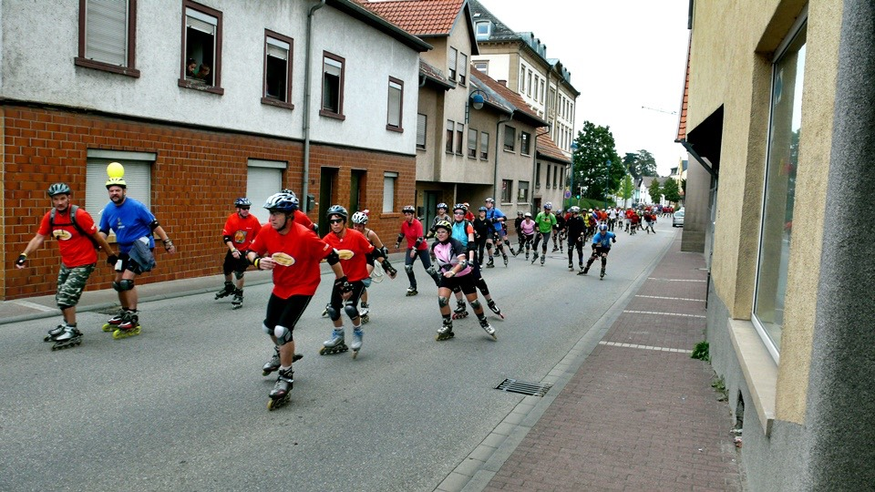
還沒完喔～簡直像快閃活動一樣，瞬間就湧現人潮，做一樣的事情，然後快速消失。
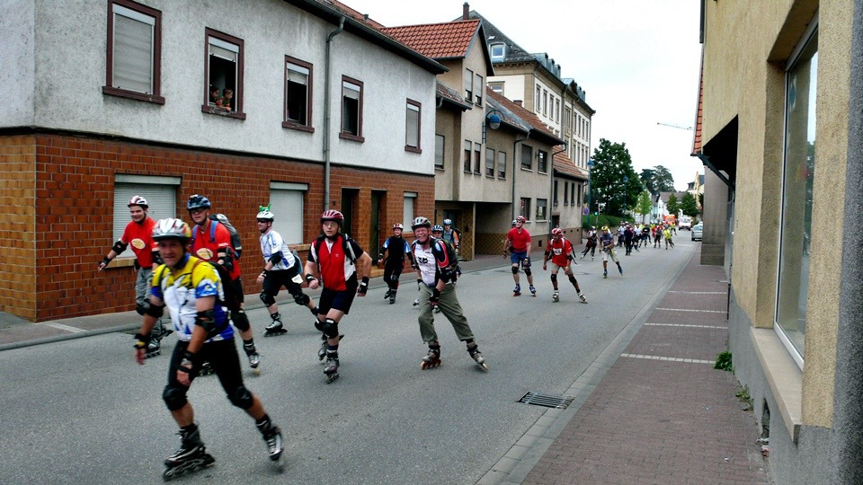
在人群的最末端隨行著一輛救護車，然後是警車殿後，警車開道的服務在德國可不只是幫愛作秀的狗屁官員，而是熱愛運動的一般民眾。
這陣子看到有結果的樹都會去觀察一下能不能吃，左邊黑黑一粒的應該是藍莓，右邊紅紅的就不知道是什麼。
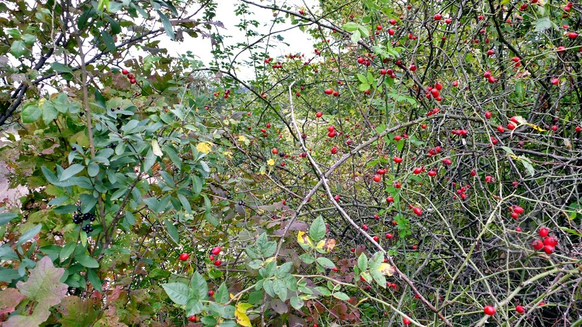
小學老師教的好，不知道是什麼的東西就不要拿來放在嘴巴裡面。
在超市都會看見各式各樣的農產品，在野外怎麼都找不到栽種的地點呢？
怎麼拔都是蘋果，大概是我只認識蘋果的關係吧，這陣子吃的東西比較沒營養，多拔點蘋果來吃。
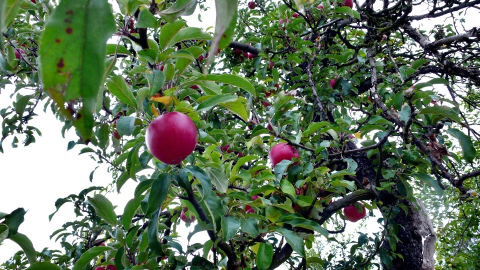
話說蘋果的種類還真是多，這次拔的跟上次的又不一樣，這裡種的是整顆都紅通通，非常小粒，看起來像是蜜蘋果。
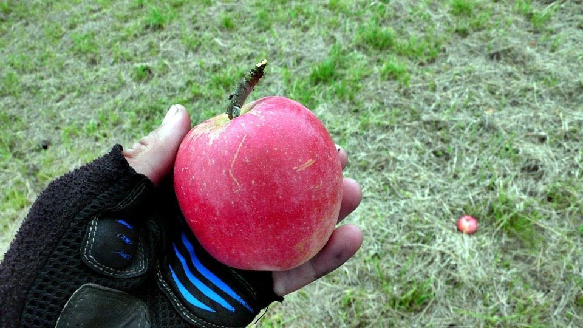
挑了幾顆顏色很漂亮的放進口袋，要吃之前還會記得在褲子上擦一擦才拿來啃。
等我佩服完自己很懂得飲食衛生之後，才發現這條褲子已經穿了一個星期都沒洗了。~_~
這邊的路燈一定很不怕冷，上頭爬滿了牽牛花，等它們開花的時候一定是超級美景，路燈變成大花束。
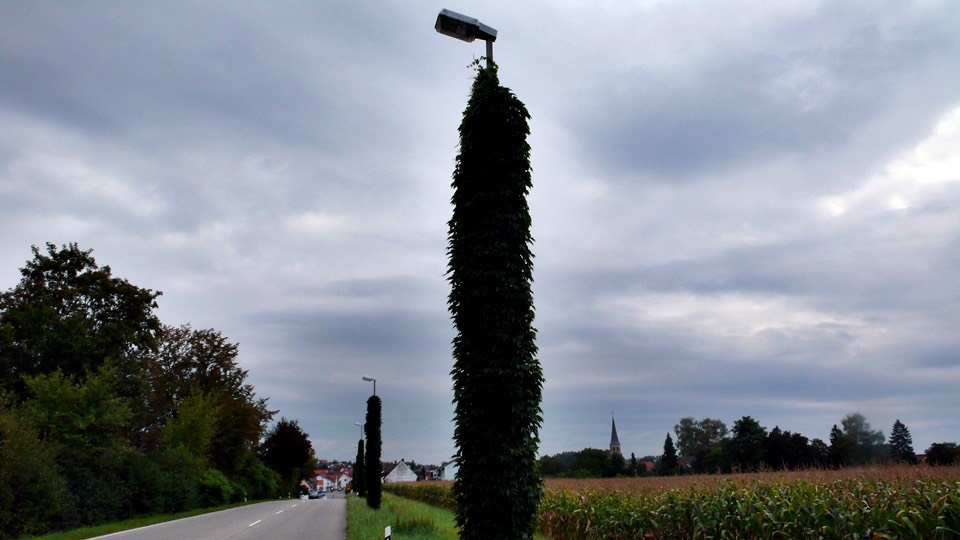
德國的城市在入口的招牌處都會寫名字，底下還會有小字，寫著像是短文簡介一樣，用五、六個單字介紹這座城市的特色。
這座城市的特色是城牆，言簡意賅，看著道路穿越城牆而過就知道為什麼了，左右兩個小門則是給單車跟行人走的。
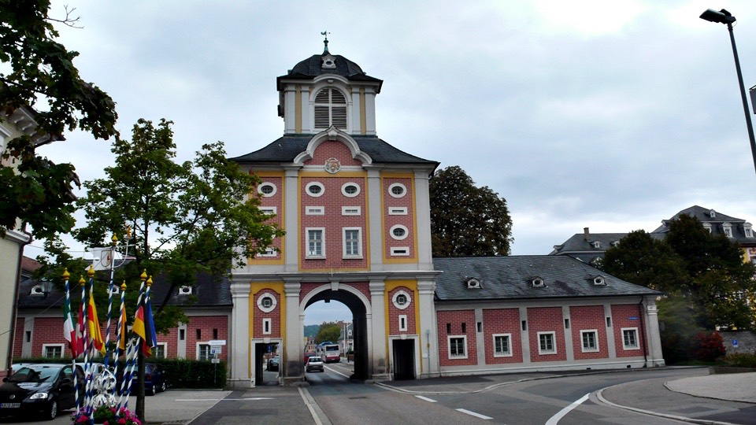
這個火車站的鐵路有這麼多條，想必是一個大站，再繼續往西邊走就會進入TGV到處跑的國度。
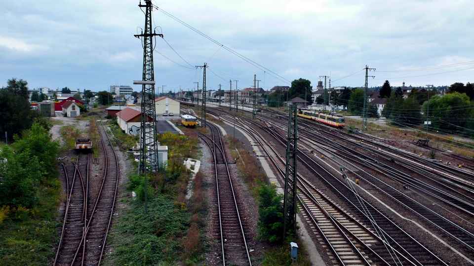
目前也處於迷路的狀態，剛才才問過一位騎單車的人，他說自己也才剛搬到這裡住沒多久，路也不熟。
我說沒關係，你隨便猜一個方向，因為這陣子我猜的運氣都很差，結果對方一猜就中，很順利的又離開了一座城市。
還有一次，在橋上跟一對夫妻問路，他們說前面右轉就可以出城了，心裡胸有成竹的說明白，揮手跟他們說再見。
等我往前走下橋，然後左轉的時候又遇到這對夫妻，隔著馬路他們就比手勢跟我說走錯邊了，要轉另外一邊才對。
我整個人很搞不清楚左轉跟右轉的差別，這樣居然也能騎這麼遠的路，迷路還算是偶爾，並不算太經常，這也是個奇蹟。
雖然自行車專用道騎起來會讓迷路的感覺更加的強烈，但只要有看見我還是會跑去騎，騎在小多專屬的路上有種被重視的感覺。
在這邊能看見很多當地的單車騎士，點頭、微笑、揮手，一整天下來看到很多笑臉迎人的德國人。
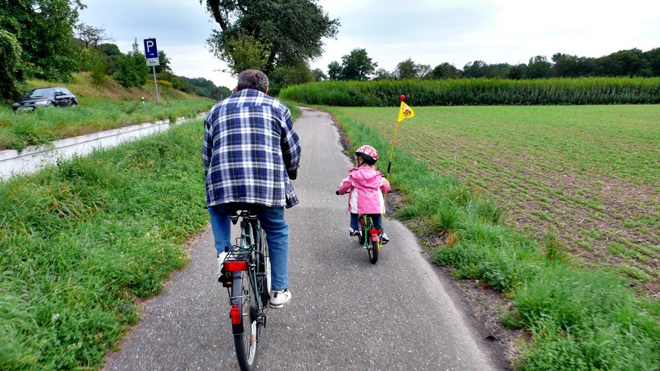
每十公里左右就會進入一座城市，然後就要頭痛一次，這次的狀況是城裡在舉辦音樂會，道路完全封閉。
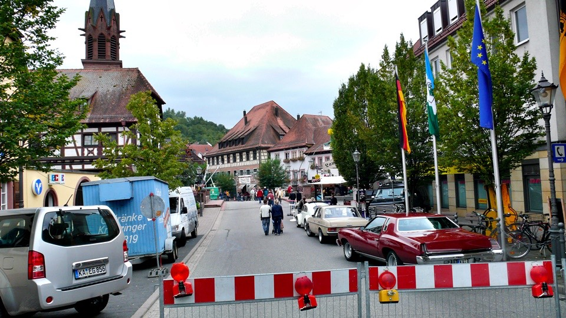
封路是沒關係，起碼掛個『U』的牌子，引導一下該怎麼跨過這一段路吧？
剛好辦活動的地方是市中心，也是大馬路必經之處，我非得從這邊經過不可，但硬生生的就是過不去。
自己胡亂的走，騎到外圍才看見這個地圖。
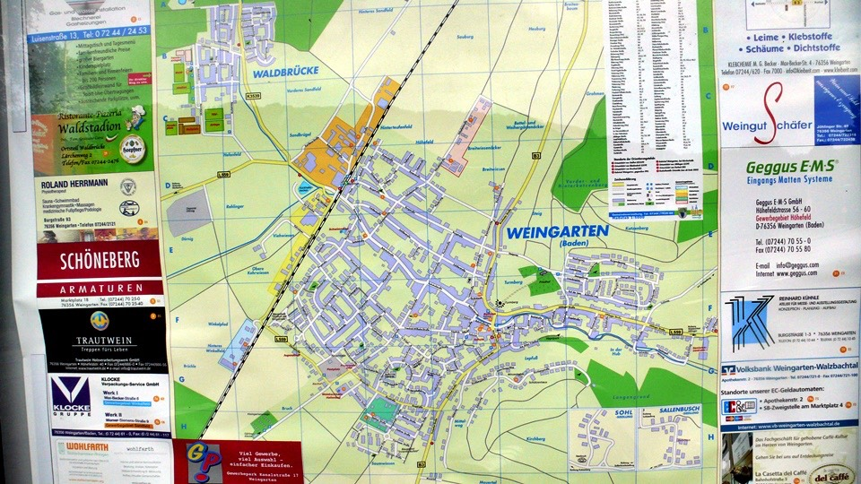
我從北邊下來，要往南邊走，現在跑到右邊的路上，再繼續騎又不知道要跑到什麼地方去。
所以又白兜了圈子，重新騎回封路的鎮上，大馬路不給走，就試著找自行車專用道來騎。
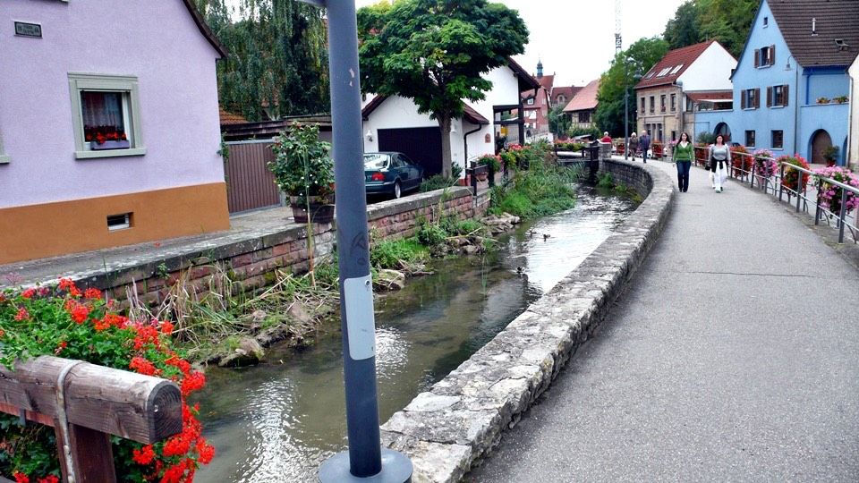
重新走回舉辦音樂會的場地，看著搭建起的舞台和好幾十攤的美食吧，封閉的街道上擺滿了桌椅，大家都不停的喝啤酒，吃大餐。
其實我也不是沒有錢，只是沒有歐元而已，省錢的日子過了一個星期之後，倒也還蠻習慣的，眼光完全自動忽略旅館跟餐廳的牌子。
可是看見各種美味的食物就在眼前，一盤一盤的被端出來，然後被遊客大口的吃下肚，確實很打擊節儉的心志。
後來就拆了巧克力夾心酥來吃，這樣嘴巴就不會那麼饞，看到別人吃東西就想跟著吃實在是我的弱點>"<
為了進入邊境城市，必須不斷的走自行車道，大馬路清一色全部都禁止自行車通行。
而自行車道的路況水準差異很大，這條穿越森林的道路是泥土地，還好換新輪胎之後，騎這樣的路根本就是小意思。
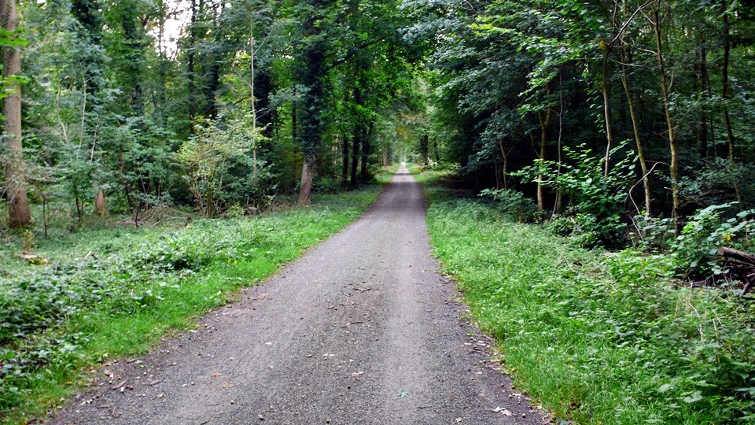
麻煩的是該往哪邊騎？
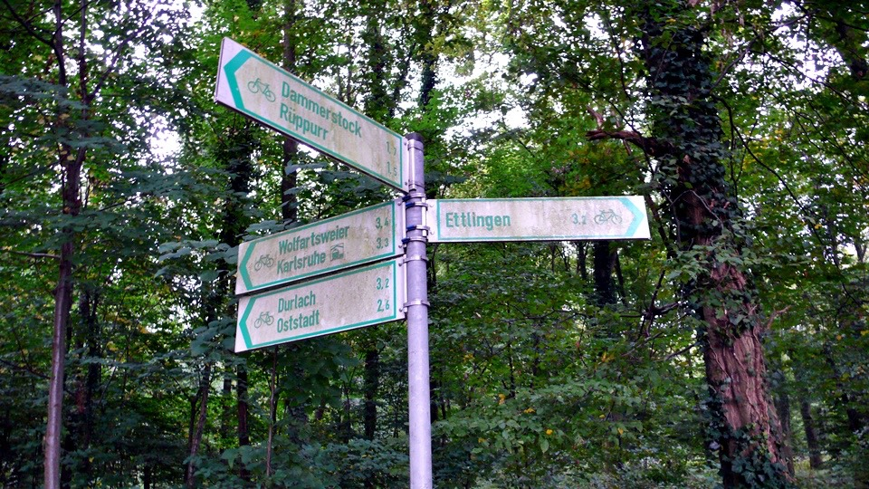
我要去的地方是Ettlingen，箭頭指著右邊，可是這個路口並沒有右邊，隨便挑了一個方向騎，
結果在下一個路口，發現三個牌子都寫著通往Ettlingen，那究竟要走哪一條呢？
看著太陽落下的方向，往西邊走總沒錯，既然自行車道這麼錯綜複雜，就算在這邊迷路拐錯一兩個彎，應該還是有辦法修正回來。
穿越森林的同時看見底下的大馬路，筆直的通往我要去的地方，路上有摩托車在行駛，可是卻不准自行車通行，非常的小氣。
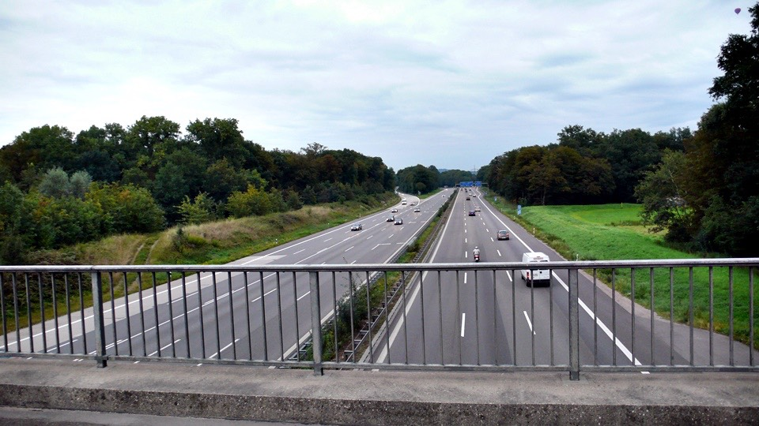
過了這座天橋，又要進入另一座森林，不停的跟看起來是好心人的人問路，問到的答案跟路標是一致的，就是說走哪邊都可以到的意思。
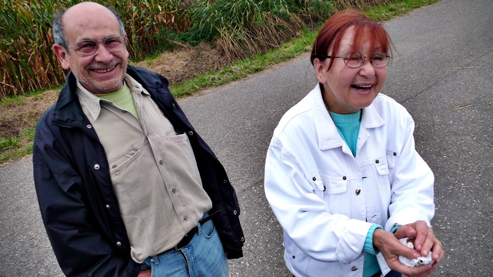
這一對老夫妻正從對面的森林的走出來，他們邊散步邊撿胡桃，用衛生紙包起來，然後一口氣全部送給我。
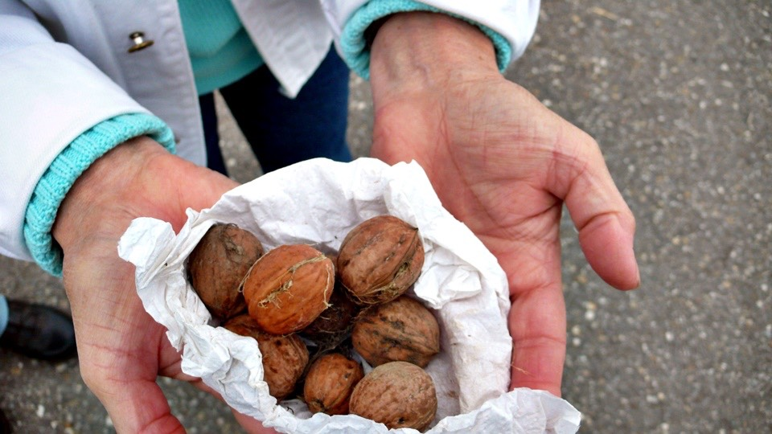
我還以為這個東西要煮過才能吃，原來胡桃是可以生吃的，用腳踩破堅硬的外殼，裡面的白色果仁好吃又有營養，免費的糧食持續補充中。
這對夫妻也跟我說走哪個方向都可以到，所以決定換一個問法，『請問法國該怎麼走？』
這樣得到的答案就只剩下一個了，往西邊去吧～
好不容易走完了茂密的森林，回到踏實的柏油路上，跟自行車道一樣傷腦筋的就是沒有任何標示的圓環。
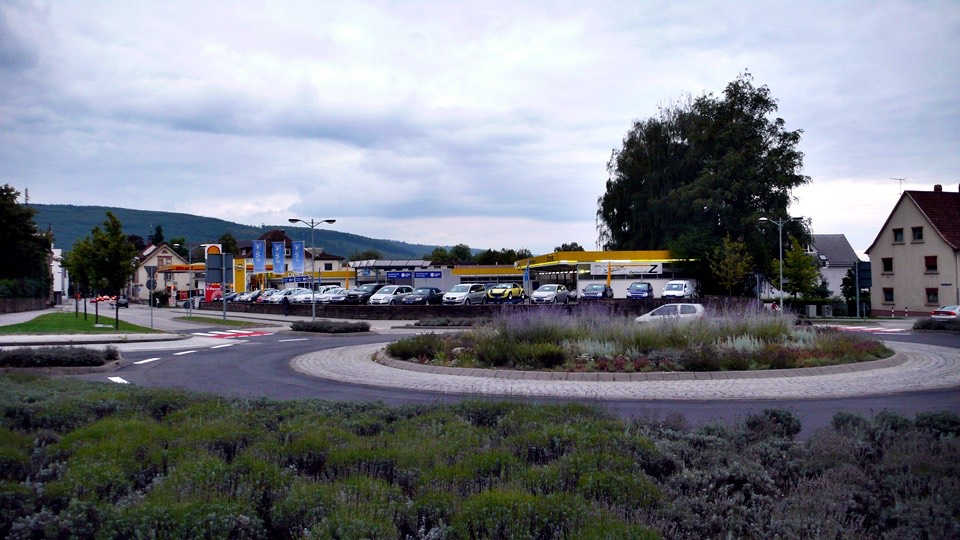
繼續向路人問路，然後趕在太陽下山之前總算到了可以落腳的處所，還以為今天要睡在森林裡面，讓我擔心了一下。
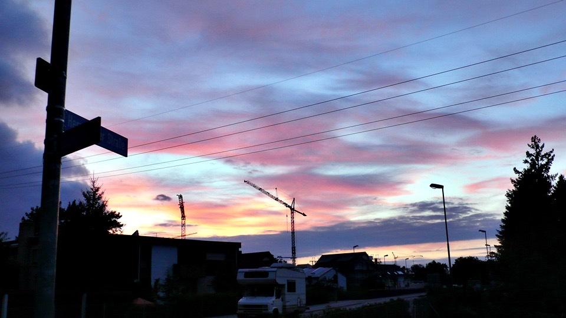
今天有看見晚霞，太陽已經偷偷的跑下山了，天空的雲層有散開的跡象，最後這幾天的天氣看能不能慢慢好轉。
今天因為自行車專用道的關係迷路得很嚴重，也因為自行車道的緣故才有辦法繞過這些不給走的道路，
如果手上有一本自行車道的專用地圖，那騎在德國真是有如神助。
因為迷路了大半天，所以趕不及在今天就進入法國，但也盡量的往邊境移動了，目前所在的區域位於德法之間，相隔著一條大河。
明天只要研究出怎麼過河，看是搭船還是怎麼樣，然後就算進入法國了，接下來要爬一座高山，大概會耗去一天的時間。
從目前所在的位置連一條直線到巴黎，距離是四百多公里，這樣實際上騎程大約要五百多公里以上。
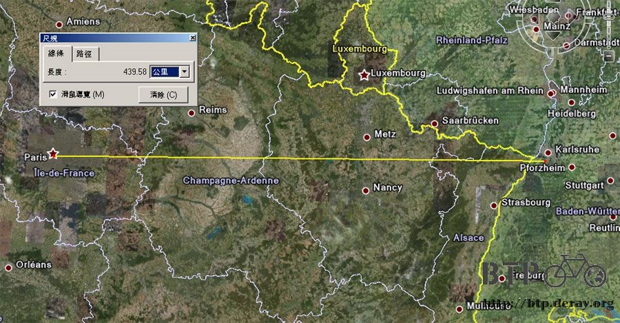
以三天半的時間來計算，一天要騎上將近一百五十公里才是理想數字。
目前會以依照原定計畫的時間抵達巴黎為重心，若進入法國之後遊記沒辦法每天連載的話，那就代表沒有空閒的時間每天花三～四個小時來寫。
今天的遊記可以在睡前就寫完，是因為找到一間歇業的商店，坐在門口的長椅上裹著睡袋打電腦，晚上就在這邊坐著睡覺。
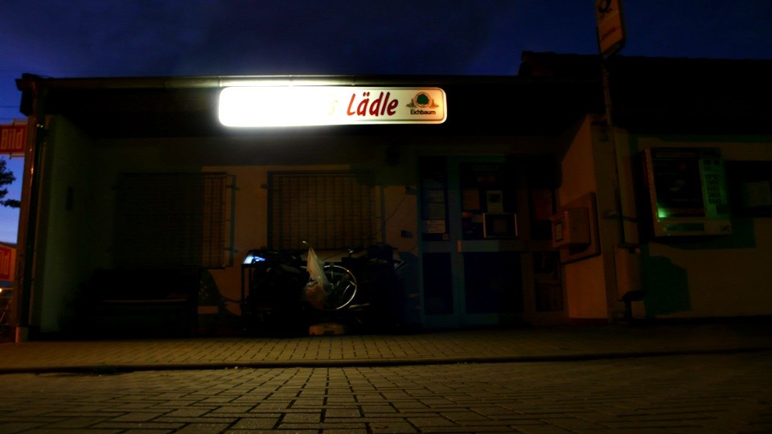
歐洲的治安可以不需要太擔心，九成九九的人都比我有錢，搶一個窮人有什麼意義呢？
明天可以有一整天的時間專心騎車，睡醒之後就是法國篇的開始了！
繼續閱讀：9.9 武功祕笈
歐洲-歐元－ 1：45 台幣
9.8
總計：3.43元
超級市場吐司、巧克力餅乾、巧克力夾心酥3.43元